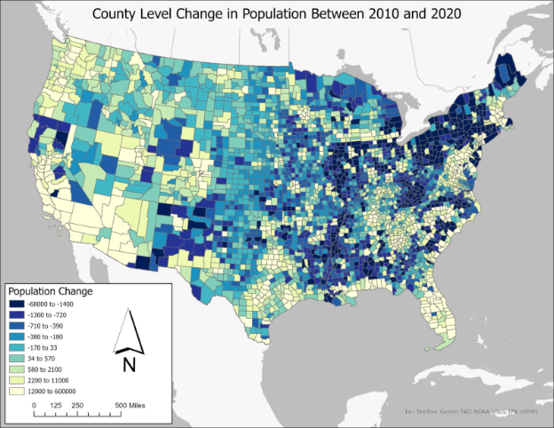
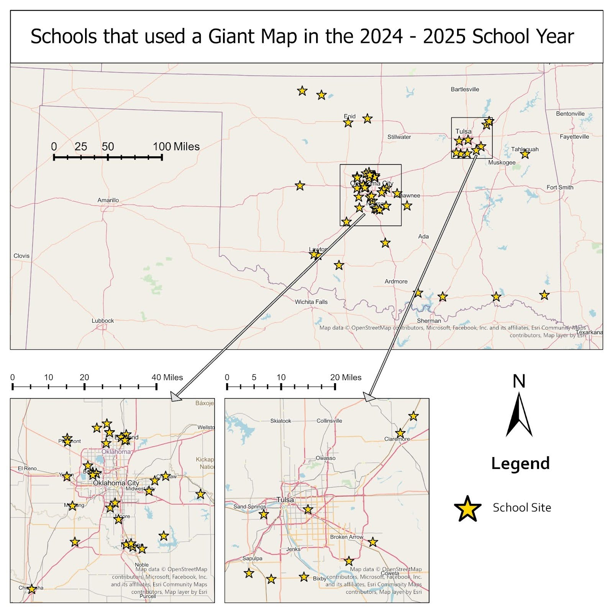
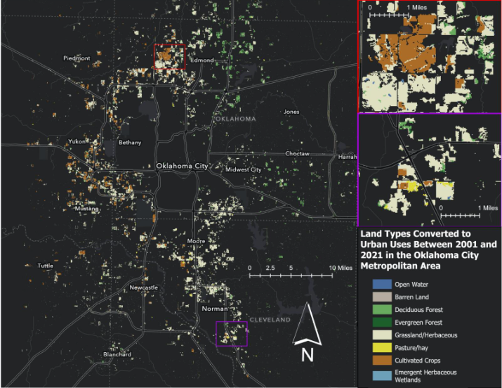
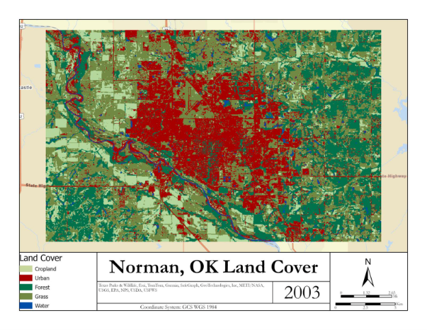
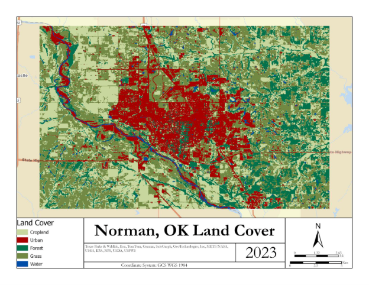
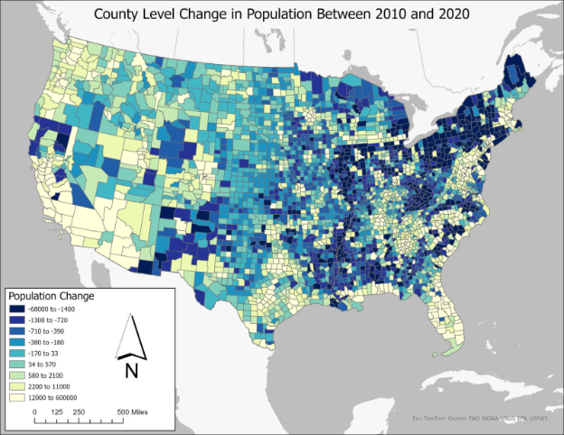
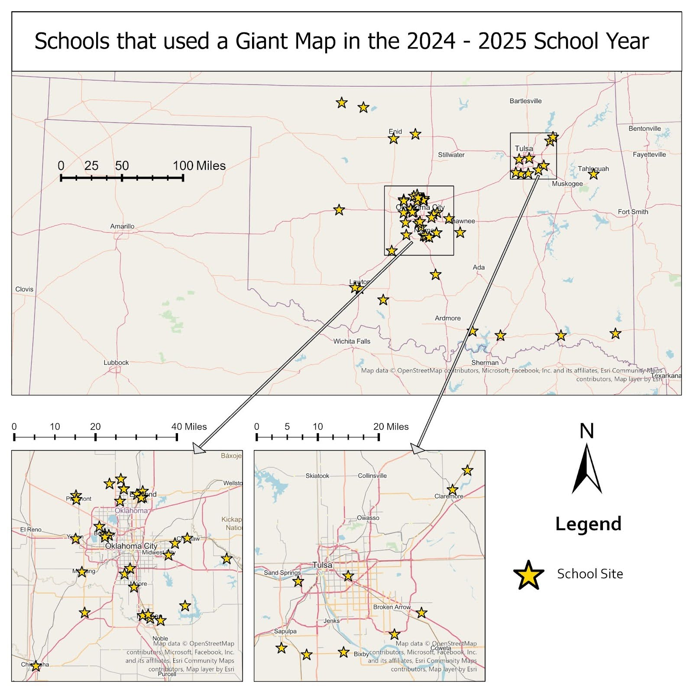
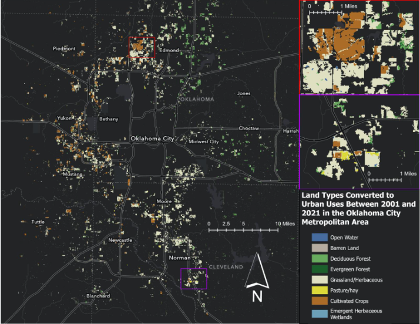
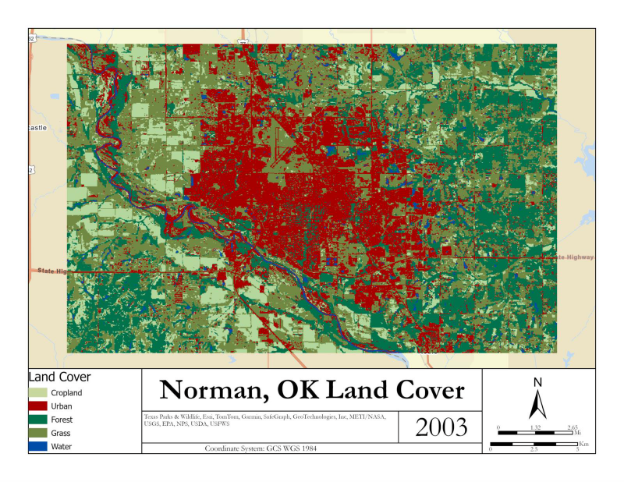
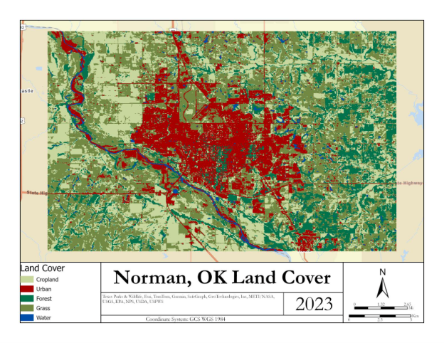

Projects, Research, and Other Creative Works
Current Project
2025 Summer Research Fellow, University of Oklahoma Office of the Provost’s Undergraduate Research and Creative Activity. Thesis title: “Equality of Sun Belt Sprawl: The Intersection Between Land Cover, Air Pollution, and Demographics in Phoenix and Houston”.
Project ProposalGIS Research and Projects
Cartography


 









Writing Samples

Graph created for LIS 4673: Introduction to Information Visualization at the University of Oklahoma. Click on the image to read more about how it was created.
Original version of The Oklahoman article: "Where We Build the Jail is Everyone's Problem"
Comprehensive City Plan Analysis written for RCPL 5063: Planning with Diverse Communities